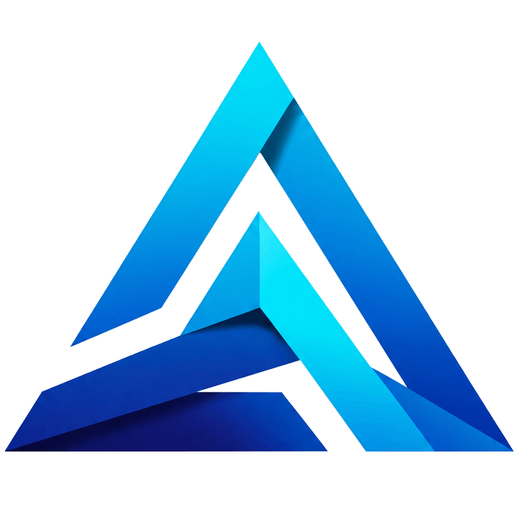

Sis centres, un únic projecte. Orientació, formació, acreditació de competències i intermediació laboral al servei de les persones, les empreses i el territori.

El CFPI Prisma neix de la voluntat compartida de FP Núria, Qualitat i Formació, STAF, PHRO Training, CMAP i SC2 de donar una resposta integrada, especialitzada i eficient a les necessitats de qualificació professional de les persones, les empreses i el territori.
Oferir serveis integrats de formació professional perquè les persones desenvolupin el seu projecte professional al llarg de la vida i les empreses trobin el talent que necessiten.
Consolidar-se com el centre de referència del Sistema FPCAT en serveis socioculturals i a la comunitat, per qualitat, innovació i cooperació.
Orientació a les persones, compromís amb les empreses, cooperació institucional, qualitat, innovació, inclusió i sostenibilitat.
Cada centre aporta trajectòria, especialització i equips complementaris. Qualsevol persona pot accedir al CFPI a través de qualsevol dels seus centres.
Identitat, missió, visió, valors i model organitzatiu del CFPI Prisma.
Serveis oferts i compromisos de qualitat, accessibilitat i millora contínua.
Oferta formativa integrada i complementària entre els sis centres, amb aportacions d'altres àmbits com la sanitat, l'administració i gestió, la digitalització o els idiomes.
Cicles formatius i primera qualificació professional.
Formació orientada a l'ocupació i la qualificació ràpida.
Actualització i ampliació de competències al llarg de la vida.
Dissenyada específicament per a empreses i entitats.
Actuacions de curta durada, flexibles i capitalitzables.
Actualització professional davant els canvis del sector.
[Pendent] detall de cicles formatius i certificats concrets, a incorporar amb el Projecte Funcional.
Atenció personalitzada i coordinada entre els sis centres de l'agrupació.
| Centre | Persona de referència | Horari | Correu |
|---|---|---|---|
| FP Núria | Persona 1 | Horari 1 | Correu 1 |
| Qualitat i Formació | Persona 2 | Horari 2 | Correu 2 |
| STAF | Persona 3 | Horari 3 | Correu 3 |
| PHRO Training | Persona 4 | Horari 4 | Correu 4 |
| CMAP | Persona 5 | Horari 5 | Correu 5 |
| SC2 | Persona 6 | Horari 6 | Correu 6 |
El servei d'acreditació facilita el reconeixement oficial de les competències adquirides per experiència laboral o vies no formals d'aprenentatge.
Informació sobre convocatòries, assessorament individualitzat, acompanyament documental i orientació cap a la continuïtat formativa.
Diagnosi de competències i definició d'itineraris personalitzats.
Reconeixement oficial de l'experiència laboral.
Oferta integrada, flexible i capitalitzable.
Borsa de treball i prospecció empresarial.
Metodologies innovadores i digitalització aplicada.
Empreses, entitats socials i administracions com a sòcies estratègiques en el desenvolupament del talent professional, detectant necessitats de qualificació i impulsant la formació dual i la innovació.
Vull col·laborar-hi